Jellycat凭借高质量和高情绪价值的核心竞争力，通过互联网有效传递品牌价值，塑造了强大的品牌力。
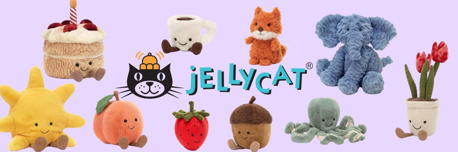
在互联网时代，消费者的购买习惯与品牌互动方式发生深刻变革，毛绒玩具行业亦不例外。曾经以儿童为主要消费群体的毛绒玩具市场正经历潮流化、年轻化转型，成为年轻群体的社交货币。诞生于 1999 年的英国毛绒玩具品牌 Jellycat，凭借独特设计语言与情感价值输出，在全球范围内掀起现象级热潮。尤其在中国市场，品牌通过精准捕捉消费者心理，结合社交平台与电商渠道的深度运营，成功塑造玩具行业的现象级品牌案例。
那么，Jellycat 究竟通过哪些策略实现了品牌的破圈增长？

1.品牌故事
Jellycat是英国的高端玩具品牌，它创立于1999年，以高端柔软面料和趣味可爱设计著称，被誉为世界上最柔软的安抚玩具。品牌名称源自创始人四岁儿子的灵感——他将对果冻（Jelly）和猫咪（Cat）的喜爱结合，创造出"Jellycat"一词，既趣味十足，又巧妙呼应了品牌造型独特、柔软治愈的风格。
Jellycat以毛绒玩具开发制造为主，秉持"分享快乐"的使命，面向0-100岁全年龄段人群，不仅为儿童提供安全柔软的玩具，更以治愈特性陪伴万千成年人。自创立以来，品牌持续发展壮大，截至2024年，市场已覆盖全球77个国家，知名度与销量稳居增长态势。在中国市场表现尤为突出，2024年双11期间，Jellycat超越迪士尼，荣登毛绒布艺品类销售额榜首，成交均价达465元；同年第二季度，其全平台电商销售额突破1.72亿元，行业断层领先。
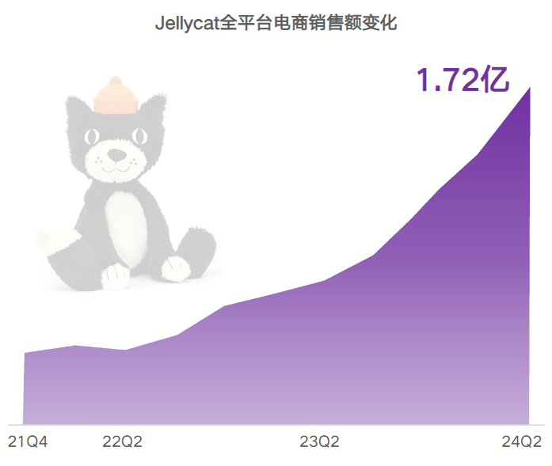
图1 久谦中台，增长黑盒研究Jellycat报告
市面上大多数玩偶价格集中在几十元区间，而以高端毛绒玩具为定位的 Jellycat，尽管定价在 99 元至 7999 元之间，却持续保持高热度，多款明星产品长期处于售罄状态。巴塞罗熊、邦尼兔、茄子等经典造型甚至被赋予了更多投资与收藏属性。这种现象的背后，互联网营销的精准布局功不可没。Jellycat 是如何通过互联网构建起强大的品牌势能的？
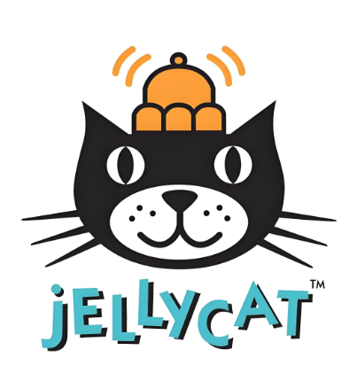
情感传播：拟人叙事与共鸣
Jellycat入驻了微博、小红书、抖音和微信公众号，在多个不同的平台进行宣传营销 。如何在信息爆发的互联网时代吸引用户的注意力是品牌重点关注的问题，因此Jellycat在进行品牌传播时注重传播内容的影响力，采取了情感营销的策略，并在各个平台中保持统一的品牌风格——温暖治愈。
玩偶拟人化
与其他玩偶不同，Jellycat赋予每个玩偶独特的“生命力”——它们不仅仅是装饰品，更是有性格、有故事的“伙伴”。Jellycat在推广时巧妙地迎合了当代年轻人互联网的表达特点，增强玩偶的社交属性。例如，它将不同的玩偶形象拟人化，通过制作精美的海报和情景照片，将玩偶打造成灵动的卡通形象，吸引消费者的关注和分享。
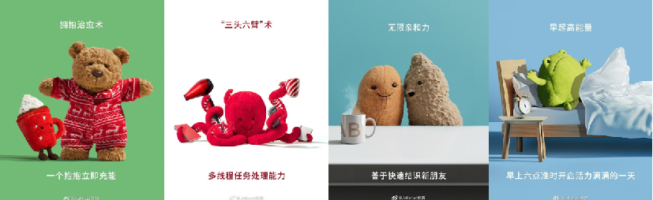
图2 Jellycat官方微博宣传图
此外，Jellycat还通过在社交媒体和官网讲故事，为玩偶设计个性鲜明的角色和背景。比如，有些玩偶被赋予了勇敢、顽皮或温柔的性格特点；逢年过节，Jellycat还会推出节日特别款，像“朋友”一样陪伴消费者度过每个特殊的日子；在宣传中，Jellycat也会给玩偶添加故事背景和人物设定，每一段故事都有温暖、治愈的底色。
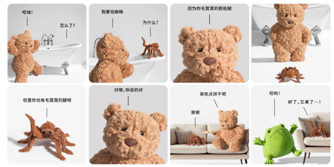
图3 Jellycat的小故事
通过故事化叙事赋予玩偶深层情感价值，Jellycat 精准契合当代年轻人的情感寄托需求，使产品超越传统玩偶范畴，成为兼具治愈感与陪伴属性的情感陪伴载体。品牌将所有玩偶亲昵地称为 "毛朋友"，并为绝版产品赋予 "退休员工" 的拟人化身份，通过拟人化表达激发消费者情感共鸣与场景想象，显著强化品牌情感纽带。这种差异化情感策略不仅强化了消费者的情感认同，更使 Jellycat 玩偶跃升为当代陪伴文化的符号化代表，在竞争激烈的市场中开辟出独特的情感消费赛道。
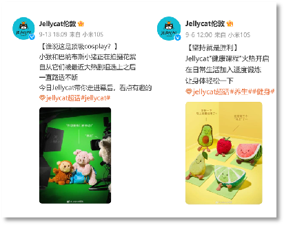
图4 Jellycat的微博营业
传递温暖、治愈的价值观
近年来，面对生活压力、新型婚恋观念的普及和独居率的上升，越来越多成年人产生了情感空缺，“治愈经济”应运而生，而Jellycat刚好满足了这一需求。毛绒玩具让人们可以用最简单的手段单方面去索取情绪价值，既是童心未泯，也是为了对抗焦虑和孤独。Jellycat着重在社交平台宣传这一点，获得了无数网友的关注。
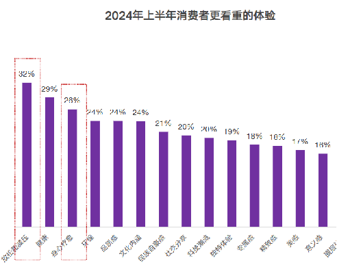
图5 2024年消费者更看重减压和治愈
下图为Jellycat官方发布的视频，其在社交媒体上发布的内容总是充满温暖和治愈的氛围。在这种治愈系经济需求越来越高的趋势下，Jellycat通过毛绒玩偶的“陪伴”特质精准触达了消费者的情感需求。玩偶不仅外形软萌可爱，还通过传递陪伴、安慰等情感元素，缓解现代人的焦虑与孤独，成为许多成年人的情感寄托。Jellycat毛绒玩具与人们的陪伴关系，正是疗愈经济广阔市场前景的一个缩影。
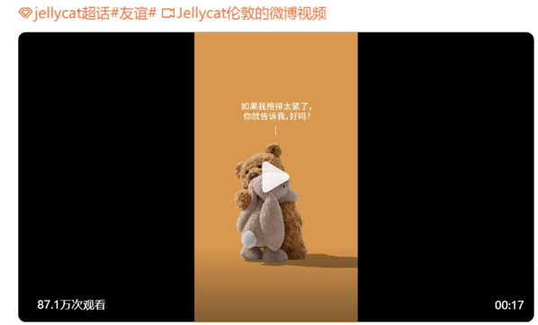
图6 Jellycat的治愈视频
与单纯功能性产品不同，Jellycat塑造的是一种情感体验，将“玩偶”变成“朋友”，让用户在互动和陪伴中获得心理抚慰。这种温暖的品牌理念和传播方式正契合了许多年轻人对情感支持的渴望，增强了品牌的情感黏性和与消费者之间的联系。

传递差异化品牌定位：Jellycat送给重要的人
早在 2014 年的年度报告中，英国公司首次将 Jellycat 明确定义为一个面向全年龄段的礼品品牌，指出礼品是其核心市场，这也是其与迪士尼玩偶最大的不同之处。那么Jellycat如何利用互联网传达其礼品的定位呢？
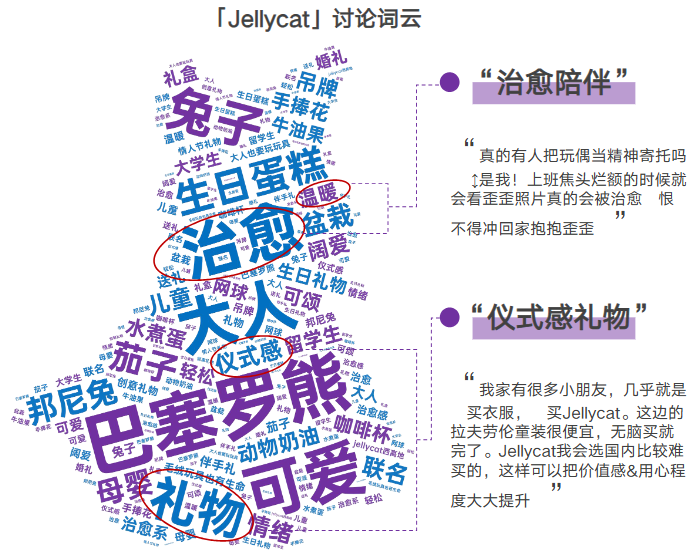
图7 Jellycat的礼品定位
首先，由于Jellycat在送礼场景下成为仪式感的代名词，品牌也紧跟消费者的仪式感追求，推出仪式感场景的产品，持续深耕礼赠场景。其次，Jellycat的寓意被消费者看重，“第一只Jellycat”代表了了对赠与人的珍视，产品的礼物价值感与意义被认可。
同时，Jellycat深入融入了各种礼赠场景，与消费者的“仪式感”追求紧密相连。品牌在营销内容中展示了丰富的节日和庆祝场景，从生日到节庆，让Jellycat成为多种场合的理想礼物选择，逐渐成为诠释“仪式感”的象征。
为了迎合消费者对特别时刻的重视，Jellycat推出了婚礼主题系列，其中包含小型捧花、婚礼蛋糕造型玩偶以及象征爱情的戒指等产品。这种通过特定场景的产品系列赋予“仪式感”的策略，不仅提升了品牌在礼物市场的吸引力，还进一步巩固了品牌作为“心意和陪伴象征”的独特定位。
例如Jellycat在小红书上宣传适用于婚礼场景送礼的玩偶。此外，还有其他日常及重要时刻的礼赠场景，从生日到情侣互赠，从新生儿诞生到馈赠自我，都有Jellycat参与，其所涵盖的情感表达与蕴含的寓意能够满足用户对于不同场景下的情感传递。
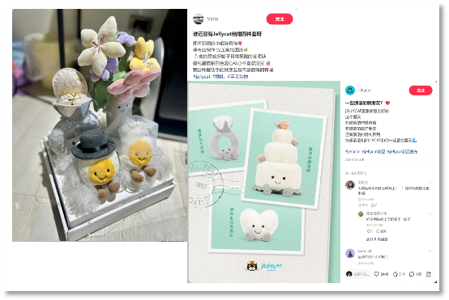
图8 Jellycat的婚礼玩偶
Jellycat通过社交媒体“第一只Jellycat”话题的流行成功塑造了其品牌的情感价值，增强了品牌力。这一话题围绕Jellycat玩偶的特殊象征意义展开。Jellycat玩偶的吊牌上通常写着“Please look after me”，这句话不仅赋予玩偶更多情感内涵，还成为品牌与消费者之间建立情感联系的核心。这个玩偶被视为一份象征关怀和呵护的礼物，传达了送礼者的情感，增添了品牌的独特温暖。
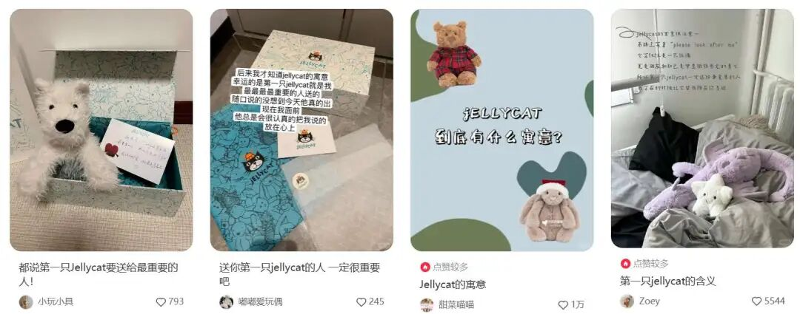
图9 小红书用户分享“第一只Jellycat”话题
这一策略借助社交网络的互动性和话题传播，将品牌塑造成一种能够满足情感寄托的礼物，增加了玩偶的情感附加值，也使得由于品牌提供的情感价值远超其成本，Jellycat 为消费者带来了更大的消费者剩余。有网友表示：这2000多块钱里，成本只有80块，剩下1900多块都是在为情绪价值买单。消费者愿意支付超出普通毛绒玩具的价格去获得 Jellycat 玩偶，体现了品牌的差异性和用户忠诚度，使得Jellycat 成为消费者心中玩偶礼品的首要选择。

用户二次创作：满足年轻人个性化表达
Jellycat在社交平台的一大特点是裂变式传播。对于品牌来说宣发难点则往往在于去中心化，能让消费者主动分享才是关键，而 Jellycat 用户热衷于在社交平台分享与Jellycat的故事。这也带来了网络效应，使得越来越多的人加入进来，讲述自己与玩偶的故事，展示满满一床的收藏，分享最近入手的最新或最搞怪的产品，都是绝佳的社交素材。截至2023年12月，小红书#Jellycat#话题已有5.7亿次浏览，笔记量超过50万;微博上的话题阅读量突破1.3亿，实时热度更是位列平台第三，此数正在不断增加。
Jellycat的产品被购买者赋予情绪价值，加上品牌产品线的拓展，能够覆盖更多生活场景，媒介的去中心化助推了Jellycat在社媒上的宣传效果。消费者愿意在小红书等社交媒体上，分享被Jellycat治愈的时刻。
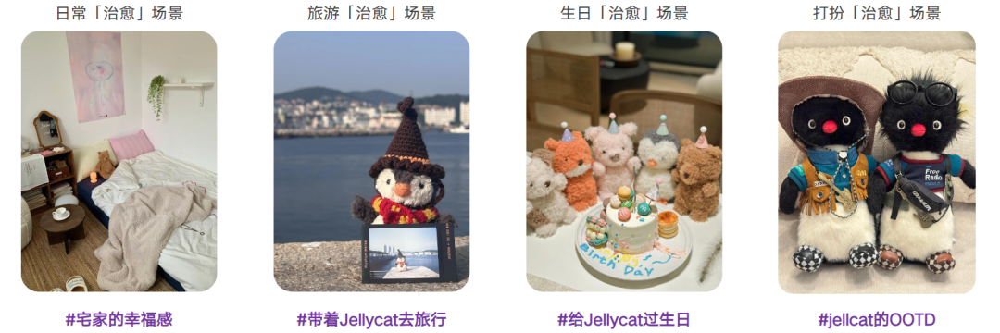
图10 Jellycat的治愈时刻
“你可能还不认识这个牌子，但已经用上了它的表情包。”随着用户自发种草的内容在社交平台上不断增多，为品牌带来了持续的关注度。以小红书上爆火的茄总为例，网友们会在网上分享自己与玩偶的日常生活，无死角展示有趣的、搞笑的想象。与此同时，Jellycat为了承接这波流量，还在社交媒体上发起了一项“万物皆可Jellycat”的P图活动，在各平台引发了制作表情包热潮和大量的话题流量。
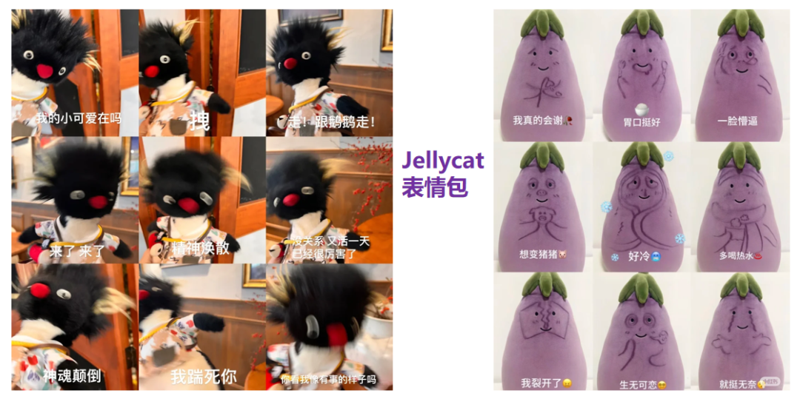
图11 用户自发制作表情包并得到了广泛传播
而小红书作为Jellycat UGC内容分享的主阵地，具有天然的社区属性，更有利于用户自发种草，树立品牌口碑，刺激购买欲望。小红书还将内容种草和电商结合了起来，在官方分享的界面便可以点击购买，极大增加了变现能力。
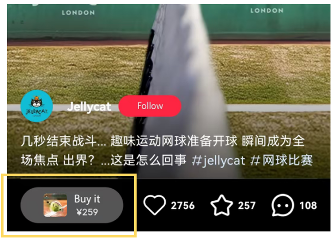
图12 小红书的Jellycat主页
此外，Jellycat还通过联名和线下体验店增加用户讨论话题热度。
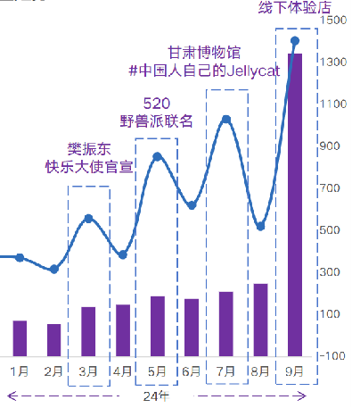
图13 Jellycat社媒声量趋势
在国内外，很多明星都曾晒出过自己的Jellycat玩具，国外如贝克汉姆的女儿小七、凯特王妃的女儿夏洛特，国内如王源、宋雨琦等。今年3月，Jellycat还官宣了樊振东为全球首位真人代言人，这次跨界合作不仅拓宽了jELLYCAT的目标人群，也贡献大量的销售额与话题度。
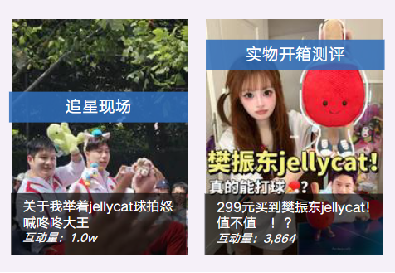
图14 小红书网友分享樊振东联名款
其次，线下体验店将线上营销和线下体验式消费结合起来，在社交媒体上带来了极高的热度。Jellycat官方所开的线下体验店附带“过家家”环节，消费者每购买一个玩偶都会获得互动的机会，通过打包时的聊天触发更多彩蛋,店员会像打包真正的食物一样对待毛绒玩具，让消费者仿佛回到了无忧无虑的童年时光，吸引了大量消费者购买并记录视频分享在社交平台中，带来了更大的话题量和用户互动。
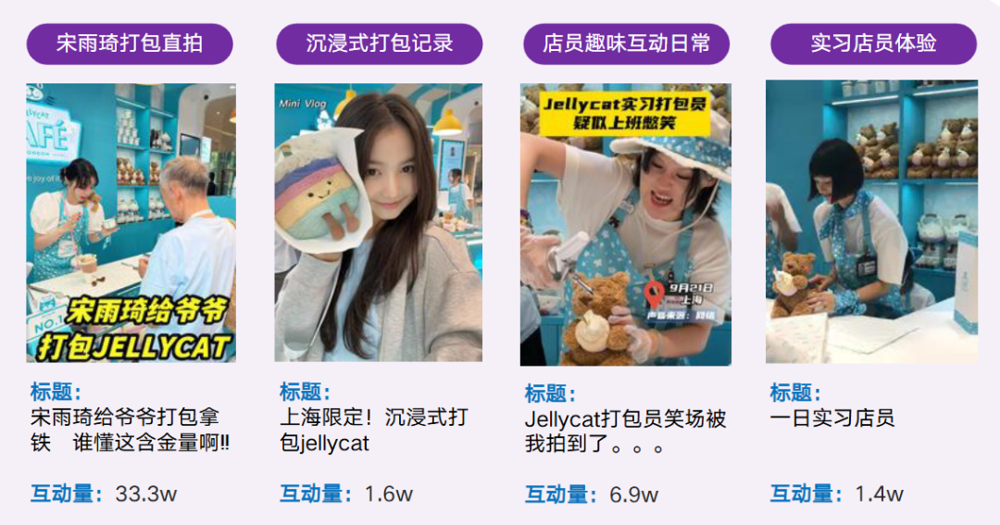
图15 用户自发传播实体店打包场景

5.结语
Jellycat凭借高质量和高情绪价值的核心竞争力，通过互联网有效传递品牌价值，塑造了强大的品牌力。通过塑造生动的玩偶形象、传播温暖治愈的价值观，与消费者产生情感共鸣，加强了与消费者的情感联系，实现了品牌的意义。同时，Jellycat打造高端礼品的形象，突破了玩偶行业“有IP无品牌”的困境，能让其从其竞争对手中脱颖而出，形成明显的差异化优势。
值得注意的是，互联网传播不仅依赖于公司自身的推广，更依靠去中心化的方式让消费者成为传播的主体。Jellycat借助用户的二次创作和社交平台上的裂变式传播，赋予了玩偶社交属性，创造了网络效应，提升了品牌在消费者心中的首要地位，进一步加强了品牌的显著性。
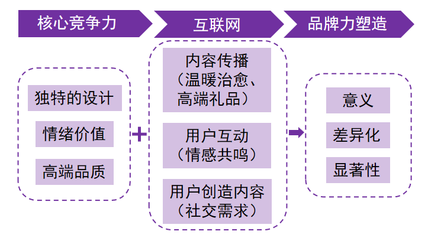
图16 Jellycat如何通过互联网塑造强大品牌力总结图
Jellycat的魅力在于其如何将主动权交给消费者，让每件产品不仅仅停留在玩具的层面，而是转化为一种传递时代精神和个人情感的载体，让消费者自发成为品牌的传播者，不断增强其品牌力，而其品牌力的增强又会进一步吸引更多用户进行二次内容创造，并再一次增加其品牌力，形成飞轮效应。